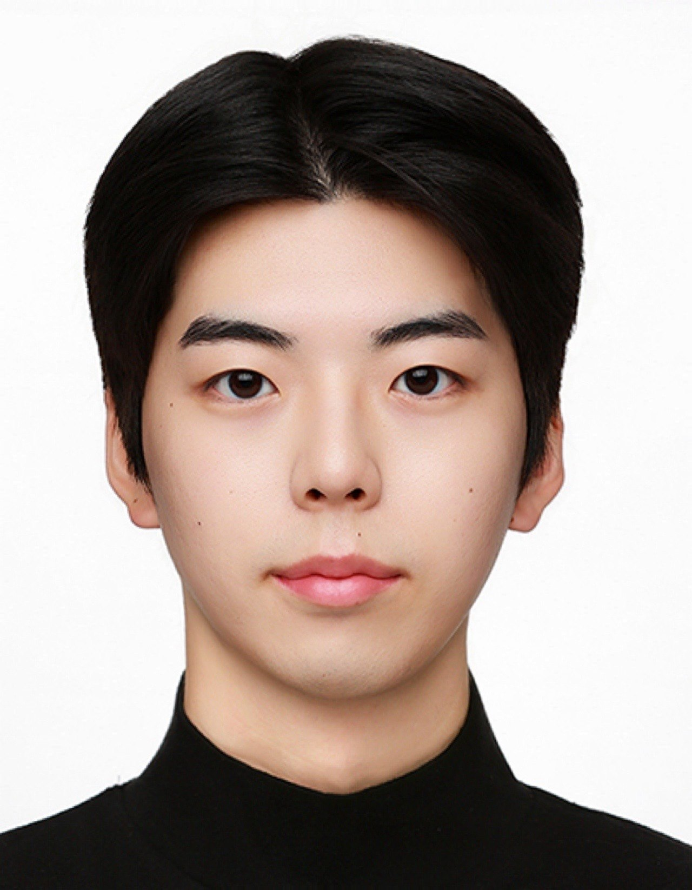
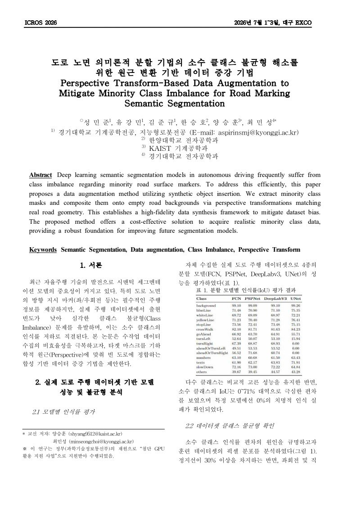
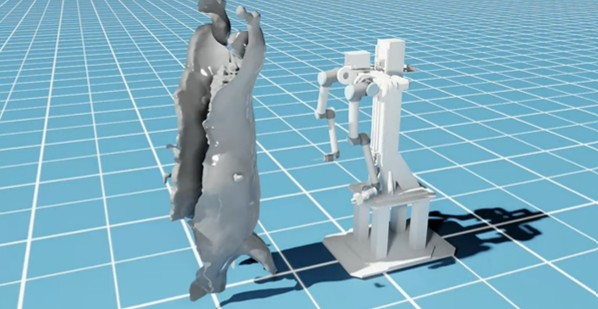
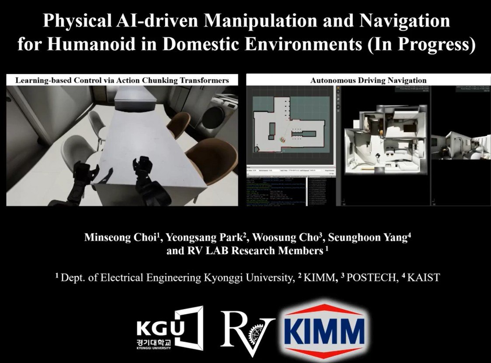
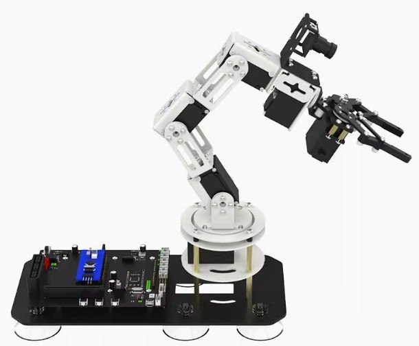
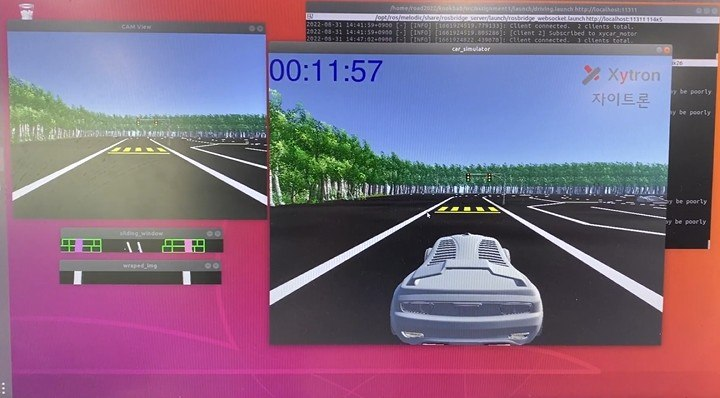

Jungyu Kim
Kyonggi University · RV Lab
Mechanical Systems Engineering — Intelligent Robotics
Undergraduate researcher building manipulators that move with the people around them — from URDF and Isaac Sim to real-time RTDE control on UR10e and Doosan arms.

About
I'm a fourth-year undergraduate in Mechanical Systems Engineering at Kyonggi University, working toward graduate research in robotics through RV Lab.
My research centers on manipulator control — converting CAD assemblies into URDF models, simulating them in NVIDIA Isaac Sim, and closing the loop with real-time control. I've implemented RTDE-based end-effector control for a UR10e and a Doosan arm, and I'm currently part of an external collaboration building a motion-engine pipeline for precision organ-procurement robotics. Computer vision runs through a lot of this work too — from OpenCV/YOLO-based object detection to classical lane-following pipelines — alongside undergraduate research into Diffusion-Policy-based imitation learning.
I think of this as human-centered robotics: a manipulator is only as good as its ability to work safely and predictably alongside the people around it. Even when the work doesn't directly touch a person — like the organ-procurement sequences I build now, where the standard of precision and care is different from human surgery — that same discipline is what I'm practicing. It's the thread running from my earliest computer-vision-based driving projects through to manipulator control today.
- Affiliation
- RV Lab, Kyonggi University
- Role
- Undergraduate Research Intern
Robot Manipulator Control & Simulation - Since
- Jan 2026 — Present
- Club
- Robot Operating & Autonomous Driving (RO:AD)
Mar 2022 — Present
Publications

Perspective Transform-Based Data Augmentation to Mitigate Minority Class Imbalance for Road Marking Semantic Segmentation
The Proceedings of the 2026 ICROS Conference
Projects
Ordered roughly as they happened — each one carrying something forward into the next.
Ongoing
Organ Extraction Robot Project
Apr 2026 — Present
Collaborating with an external company on automated organ procurement, building a full motion-engine sequence implementation for precision robotic extraction control.
- Converted robot CAD files to URDF format and visualized them in Isaac Sim for control
- Implemented the complete cutting sequence within the motion-engine pipeline
Diffusion Policy-Based Control of Doosan Robot Manipulator
May 2026 — PresentResearching imitation-learning-based manipulator control using Diffusion Policy.
- Configured the Doosan robot environment and built its simulation in Isaac Sim
- Developing a Diffusion-Policy-based control pipeline for manipulation tasks
Past
VR Teleoperation-Based Imitation Learning Data Collection
Jan 2026 — Apr 2026
Collected demonstration data for robotic manipulation using Isaac Sim and ACT policy learning.
- Operated a WebXR-based VR teleoperation system to collect grasping demonstrations
- Contributed hand-tracking demonstration episodes to ACT policy training
6-DOF Robotic Arm Control and AI Vision Implementation
Jul 2025 — Dec 2025
Built a robotic arm control and AI vision system on a Yahboom Dofbot SE (6-DOF).
- Assembled the hardware and configured the full development environment (VMware, Ubuntu, ROS)
- Implemented and ran arm-control code in Python and ROS
Autonomous Driving Project using Xycar Simulator
Jul 2022 — Sep 2022
Completed the track in under 3 minutes using lane detection alone.
- Converted camera views to bird's-eye view and generated binary lane images via a sliding-window algorithm
- Achieved stable cornering through the probabilistic Hough transform
- Controlled speed and steering via ROS topics and Python scripting
Vehicle with Object Detection and Automatic Reporting System
Mar 2022 — Jun 2022Built an obstacle-avoidance vehicle on Jetson Nano using ROS and Python.
- Built an automatic reporting system using shock-detection sensors and the Kakao API
- Implemented dynamic object detection with OpenCV and YOLO
Drone Delivery Service for Underdeveloped Areas
Mar 2022 — Dec 2022Streamed live video over UDP from a camera-equipped drone in Gazebo, controlled via QGroundControl and PX4 SITL.
- Modeled and visualized the drone in Autodesk Fusion 360
Awards
3rd Prize — SW Imaginary Company Project Contest
Council of SW-Centered Universities1st Prize — BARUN Problem Solving Project
Kyonggi UniversitySkills
Software & Simulation
CAD & Hardware
General
Activities
Get in touch
I'm looking to continue into graduate research in robotics — manipulator control, simulation, and learning-based manipulation. I'd welcome the chance to talk about a lab, a project, or just robotics in general.
- jg2087@naver.com
- Phone
- +82 10-7367-2087